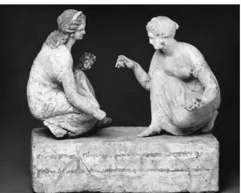

- Dashboard
- Frekuensi Harapan
- Sumber lain
- Geogebra
-
Estevania OctavianaWeb DesginerPeluangSejarah Peluang
Teori peluang merupakan cabang matematika yang menitikberatkan pada gejala random. Tapi apakah kalian tau bagaimana sejarah peluang itu sendiri? Peluang ditemukan sejak 5000 tahun yang lalu. Para arkeologi sudah menemukan bukti-bukti prasejarah yang muncul dan dapat dibandingkan dengan permainan dadu saat ini. Salah satu alat yang pertama memproduksi pola-pola acak tersebut adalah astragalus. Astragalus adalah sebuah tulang yang terdapat pada tumit rusa, biri-biri, anjing dan mamalia lainnya. Banyak astragalus yang ditemukan pada zaman prasejarah di zaman mesir kuni dalam permainan kesempatan (peluang).
Salah satu alat yang pertama memproduksi pola-pola acak tersebut adalah astragalus. Astragalus adalah sebuah tulang yang terdapat pada tumit rusa, biri-biri, anjing dan mamalia lainnya. Banyak astragalus yang ditemukan pada zaman prasejarah di zaman mesir kuno dalam permainan kesempatan (peluang).

Permainan pertama mengenai peluang yang dapat dipahami dengan baik adalah yang berasal dari Mesopotamia. Salah satu kota penting di Mesopotamia saat itu adalah Ur. Saat melakukan penggalian di awal abad 20, para arkeolog menemukan sebuah permainan papan yang tertimbun dengan pemakainya. Permainan papan dengan pahatan yang bagus tersebut sudah berusia sekitar 4500 tahun. Permainan ini dapat dipahami dengan baik karena catatan kuno mengenainya juga diperoleh dari penggalian.
Permainan ini dinamakan Permainan dari 20 Persegi. Pemainnya terdiri dari dua orang. Masing-masing percaya pada sebuah kombinasi keberuntungan dan sebuah strategi kecil untuk menang. Pada bagian keberuntungan, dilambungkan sebuah dadu untuk menentukan berapa banyak persegi untuk setiap pemain agar dapat menggerakkan bagiannya. Keterampilan yang harus dimiliki adalah memilih bagian yang harus digerakkan.

Permainan di atas menunjukkan adanya proses acak karena banyaknya bagian yang dapat dilompati setiap pemain ditentukan oleh hasil lambungan sebuah dadu. Permainan ini terkenal smpai Mesir dan India. 250 tahun setelah penemuan Permainan 20 Persegi, budaya Mesopotamia semakin berkurang pengaruhnya. Yang paling dominan saat itu adalah budaya Romawi dengan permainan judinya.